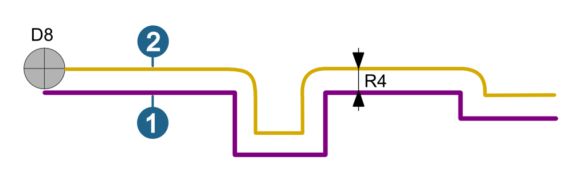
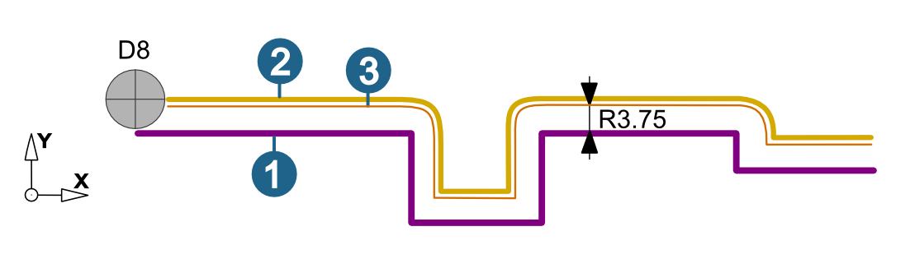
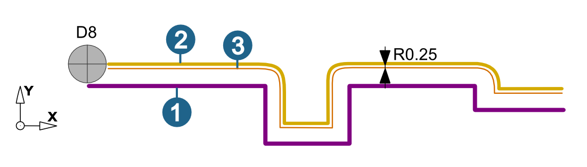
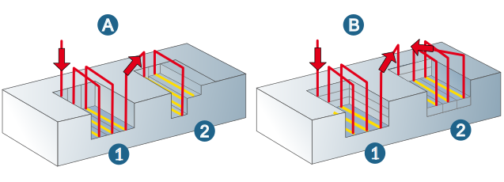
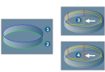

Parameters
Tool position
The right selection of the cutter position depends on the direction of the polyline (4).
Left (1), Right (2): Machining with path compensation.
On contour (3): The cutter moves directly along the contour; machining takes place without path compensation.
 |
Path compensation
Center path: hyperMILL calculates a toolpath that can be machined using the specified tool without collisions. Stock allowances in XY are taken into account.
Select this function if your controller does not offer the path compensation feature.
Note
The tool diameters must be adhered to exactly during machining. If tool diameters vary, the NC program has to be corrected.
(1) Contour (selected in hyperMILL).
(2) Center path (calculated by hyperMILL) corresponds to NC path.
|  |
Compensated path: hyperMILL calculates a toolpath that can be machined using the specified tool without collisions. Stock allowances in XY are taken into account.
(1) Contour (selected in hyperMILL) corresponds to NC path.
(2) Center path (calculated by hyperMILL).
(3) Center path (calculated by NC control with real tool diameter).
_______________________________________________________________
hyperMILL tool: D8 / R4
Real tool: D7.5 / R3.75
Tool data storage: D7.5 / R3.75
|  |
Max. compensation value: The NC control can be corrected up to the defined value. Default = Tool radius * 0.01 or Nominal diameter * 0.01 (for chamfer cutters).
Compensated center path: Only available if enabled for the job list on the Setup dialog page. hyperMILL calculates a toolpath that can be machined using the specified tool without collisions, including the path compensation.
(1) Contour (selected in hyperMILL)
(2) Center path (calculated by hyperMILL) corresponds to NC path
(3) Center path (calculated by NC control with real tool diameter)
hyperMILL tool: D8 / R4
Real tool: D7.5 / R3.75
Tool data storage: D-0.5 / R-0.25
|  |
Comp. finish pass only: Only available for compensated center path. The radius compensation occurs for the final finish pass only. The output of all other paths is centered, i.e., the tool actually used must not be larger than the programmed tool.
Infeed
Vertical stepdown: Z infeed to the next machining pass.
Oneway: Machining always in the same orientation.
Zigzag: Machining with alternating orientation.
Allowance
For information on Allowance XY and Allowance Z see section Allowance.
Please note that the values for Stock allowance XY and Allowance (lateral Infeed area) add up for 2D Contour Milling.
Lateral infeed area
Stepover (factor of diameter): Stepover in the XY plane as a factor of the cutter diameter.
Offset: For pre-machined contours with constant offset, this can be removed parallel to the contour in several horizontal stepovers. Usage: Rework-machining premachined contours whose stock allowance cannot be cleared with one horizontal stepover Clearing open pockets
 |
Machining sequence
Bottom (A): Each contour is fully processed in accordance with the defined vertical stepdown, and while taking account of the top and bottom (1). The system then switches to the next contour (2).
Plane (B): In every plane, the offset will be completely removed in multiple horizontal stepovers (1), followed by switching to the next contour (2).
|  |
Retract mode
The retract mode defines the Z level where the system executes horizontal infeed movements. The mode set is valid for all machining directions (incl. approach, retract and return movement macros) and for the profiles machined with them. Exception: Machining in zigzag mode without return macro.
Clearance distance (1): all retract and infeed movements are executed via the clearance distance. Starting and end positions of an infeed movement in rapid are displaced in Z direction in order to guarantee a collision-free linear infeed movement. The clearance distance is added to these positions.
Clearance plane (2): all retract and infeed movements are executed via the clearance plane.
 |
Safety
Clearance plane and clearance distance apply in the direction of the Z axis of the current frame.
 |
Clearance plane (1): Plane for rapid tool movements. Specification in absolute dimensions Define the clearance plane by right-clicking on the icon. Select a point and confirm the selection. |
Warning
Traversing movements on the clearance plane are not checked with regard to collisions. Therefore, this plane must be placed at a sufficient distance above the surface of the workpiece.
Clearance distance (2): Distance to the current toolpath to be milled. Above the clearance distance, infeed takes place as rapid in the Z direction (A); below the clearance distance infeed takes place at the Z feedrate (B).
(3) Top, (4) Bottom
 |
Interior corners
Fillet interior corners: Smooth filleting (rounding) of internal milling paths for contour pockets or islands. Interior corners are machined at the reduced feedrate.
Reduce corner feedrate: Corner machining at reduced feedrate. Also available for Contour Milling on 3D Model.
The feedrate reduction depends on the profile of the toolpath generated. A reduction occurs when the angle between the current and changed direction is greater than / equal to 60° in sharp corners.
The reduction begins with a value of 0.5 * tool radius before the corner.
Example:
(1) Tool D10, Angle < 60° - Machining at normal feedrate
(2) Tool D18, Angle > 60° - Machining at reduced feedrate
 |
Warning
Only available for the path compensations Center path and Compensated center path.
Options
End with plunge point: Enable if a plunge point for machining was defined and machining should also finish at the defined plunge point. Note that the starting point of the contour may not lie on an outer corner. Normally, machining is completed in a downward motion - from the top parameter (1) to the bottom parameter (2), see (A).
Bottom to top milling: Machining is completed in an upward motion from the bottom parameter (2) to the top parameter (1), see (B). The stepdown always takes place via the clearance distance in a spiral.
 |
Prefer spiral: If possible, a spiral tool path is created.
Rapid plunge: If the function is activated, the first infeed is made in rapid.
Example:
(1) Top, (2) Bottom,
(3) Bottom to top milling and Prefer spiral are activated. Plunging takes place as a G1 movement.
(4) Bottom to top milling, Prefer spiral and Rapid plunge are activated. Plunging takes place as a G0 movement.
Note
The Rapid plunge option only works if both Bottom to top milling as well as Prefer spiral are activated.
|  |